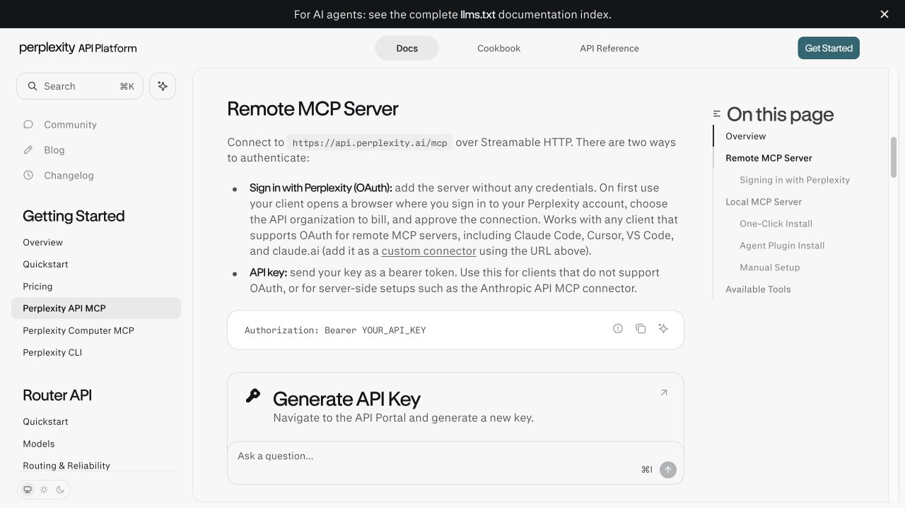
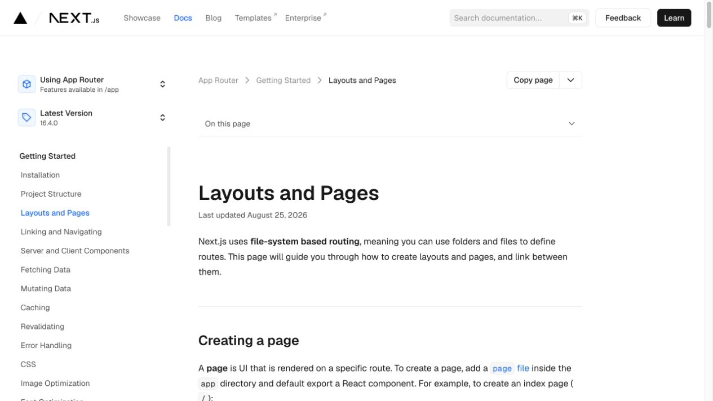
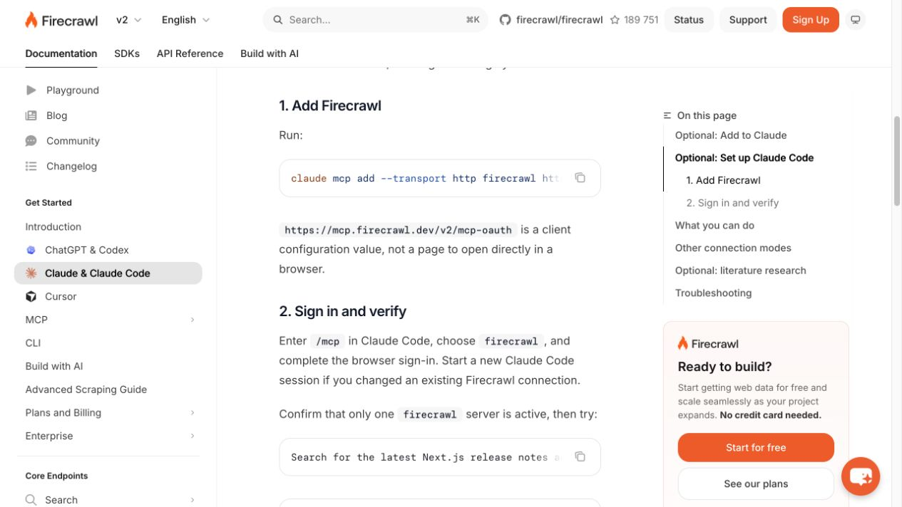
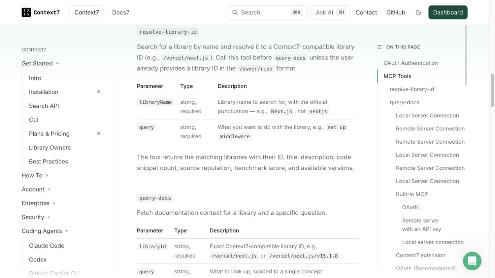
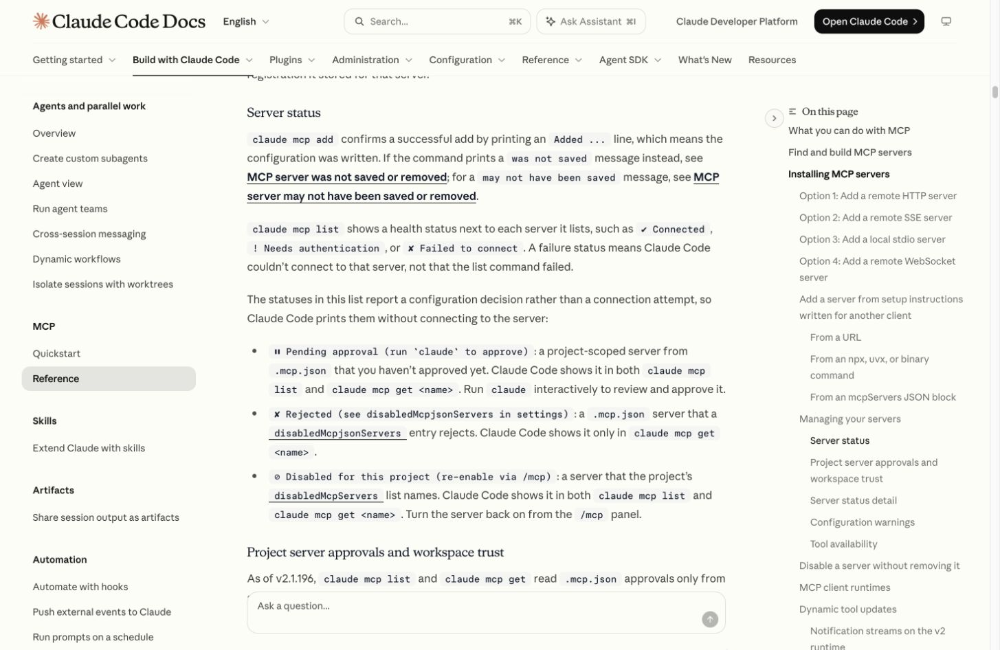

Перед подключением
Открой Claude Code: это помощник, который работает с папкой проекта. Обычный чат на Claude.ai подключается иначе. Если Claude Code ещё нет, начни со статьи «Claude Code и Codex в VS Code». Для команд нужна программа claude в терминале. Одного расширения VS Code мало: добавь программу по инструкции установки.
Открой папку проекта в VS Code. Выбери Terminal → New Terminal («Терминал → Новый терминал»). В нижней панели вводи команды по одной, после каждой нажимай Enter:
claude --version
node --version
npx --versionКаждая команда должна показать версию. Для Playwright MCP нужен Node.js версии 18 или новее. Если node или npx не найдены, скачай Node.js с пометкой LTS («с долгой поддержкой») с официального сайта. После установки открой новый терминал.
Теперь посмотри, какие MCP у тебя уже есть:
claude mcp listНужное имя уже в списке? Пропусти его установку и сразу выполни проверку из соответствующего шага. Флаг --scope user делает подключение доступным тебе во всех проектах. Настройки сохраняются в твоём файле ~/.claude.json.
Команды claude mcp add вводи в терминале. Запросы помощнику и /mcp - в чате после запуска claude. Для следующего подключения выйди из чата через /exit, вставь команду установки и снова запусти claude в той же папке.
Ключ API даёт доступ к сервису. Вместо YOUR_API_KEY подставь свой ключ. Меняй только эти слова: кавычки и пробел после Bearer оставь. Вставляй ключ в терминале своего компьютера. Не отправляй его в чат, на скринах или в файлах для других людей. Если ключ уже увидел кто-то посторонний, отзови его в кабинете сервиса и создай новый.
Для Perplexity и Context7 понадобятся ключи из их кабинетов. Firecrawl подключим через вход в аккаунт. Расходы этих сервисов считаются отдельно от Claude Code.
Эти серверы можно подключить и к Codex. Там другие команды и файл настроек. Здесь все шаги рассчитаны на Claude Code.
Шаг 1. Perplexity: найди источник свежего ответа
Для свежей инструкции сначала нужен свежий источник. Perplexity добавляет к Claude Code поиск в интернете: помощник отправляет запрос на серверы Perplexity и получает найденные страницы.
Возьмём инструмент perplexity_search. Он вернёт страницы, где можно проверить дату и версию. У Perplexity есть и инструменты с готовым развёрнутым ответом. Сейчас нам нужен сам официальный источник.

Открой кабинет Perplexity API, войди и создай ключ. Скопируй его и вернись в терминал VS Code. В команде ниже замени YOUR_API_KEY своим ключом:
claude mcp add --scope user --transport http perplexity https://api.perplexity.ai/mcp --header "Authorization: Bearer YOUR_API_KEY"Дождись Added («Добавлено»). Запусти claude, введи /mcp и найди perplexity. Отправь помощнику запрос:
Через Perplexity инструментом perplexity_search найди последний стабильный выпуск Next.js на официальном сайте или в официальном GitHub vercel/next.js. Покажи номер версии, дату выпуска и ссылку на первоисточник. Не выбирай canary (тестовую сборку) или предварительный выпуск. Назови вызванный инструмент Perplexity.Next.js используют для создания сайтов. Для этой проверки ставить его не нужно. В следующих шагах встретится App Router: он задаёт адреса страниц через папки и файлы. Сохрани найденную версию Next.js, она понадобится в конце.
Результат: Perplexity вернул версию Next.js, дату и официальный источник. В чате виден вызов инструмента. Дальше откроем страницу в браузере.
Шаг 2. Playwright: открой страницу глазами помощника
Playwright откроет браузер на твоём компьютере. Claude Code сможет читать страницу, нажимать кнопки и сохранять скрины. Так ты увидишь, что помощник действительно открыл нужный сайт.
Возьмём публичную документацию: входить в аккаунт не придётся. Скрин появится в папке проекта, и ты сможешь сравнить его с ответом.
Выйди из чата через /exit и вставь в терминал команду подключения:
claude mcp add --scope user playwright -- npx -y @playwright/mcp@latestПосле -- стоит команда, которую Claude Code запустит как MCP-сервер. Ключ API здесь не нужен. Если понадобится другой способ установки, открой страницу Playwright MCP.

Снова запусти claude. Открой /mcp, найди playwright и отправь запрос:
Через Playwright открой https://nextjs.org/docs/app/getting-started/layouts-and-pages. Покажи фактический адрес после открытия, заголовок страницы и сохрани скриншот в папке проекта. Назови файл скриншота. Ничего не отправляй через формы.Открой сохранённый скрин в VS Code. Сравни заголовок на нём с ответом помощника. Браузер не установлен? Попроси Claude Code установить его через инструмент сервера и повторить проверку. Если останется ошибка, передай её через блок помощи ниже.
У Playwright есть два способа управления браузером: MCP и CLI. Если CLI уже установлен, MCP всё равно нужно отдельно добавить в список подключений.
Результат: страница открыта, а сохранённый скрин можно посмотреть. В ответе видны адрес и заголовок. Теперь прочитаем не только экран, но и остальной текст страницы.
Шаг 3. Firecrawl: прочитай страницу целиком
Firecrawl передаст Claude Code текст страницы, включая пояснения и примеры. Он работает через удалённый сервис. scrape читает один адрес, map находит адреса внутри сайта, а crawl собирает несколько страниц.
Сейчас прочитаем одну страницу. Обходить весь сайт для этого не нужно.
Выйди из чата через /exit и добавь Firecrawl командой ниже. Затем войдём в аккаунт, чтобы получить полный набор инструментов:
claude mcp add --scope user --transport http firecrawl https://mcp.firecrawl.dev/v2/mcp-oauthЭтот адрес нужен MCP-серверу. В браузерную строку его вставлять не нужно. Другие варианты подключения есть в инструкции Firecrawl.

Запусти claude, введи /mcp и выбери firecrawl. Открой предложенную ссылку и войди в браузере. Если аккаунта нет, создай его. Разреши подключение аккаунта, вернись в Claude Code и отправь:
Через Firecrawl прочитай https://nextjs.org/docs/app/getting-started/layouts-and-pages инструментом firecrawl_scrape. Верни заголовок, ссылку и объяснение из страницы о том, какой файл создаёт страницу сайта. Покажи один пример из документации. Не запускай crawl всего сайта.Если нужен ключ API вместо входа через аккаунт
Это замена входу через аккаунт. Создай ключ в кабинете Firecrawl. Если firecrawl уже в списке, удали только его: claude mcp remove --scope user firecrawl. Вставь ключ вместо YOUR_API_KEY в терминале:
claude mcp add --scope user --transport http firecrawl https://mcp.firecrawl.dev/v2/mcp --header "Authorization: Bearer YOUR_API_KEY"Запусти Claude Code снова и повтори запрос чтения. Один сервис подключай одним способом, чтобы не путаться между двумя записями.
Если позже понадобятся несколько страниц, попроси map показать их адреса. Выбери нужные и ограничь crawl этим числом. Без ключа и аккаунта доступны только чтение страницы, поиск и обработка файлов. Для полного набора используй подключение с входом.
Результат: Firecrawl вернул текст и пример с нужной страницы. В чате виден вызов инструмента. Осталось проверить, подходит ли пример твоей версии программы.
Шаг 4. Context7: найди документацию нужной версии
Context7 находит документацию библиотек и приносит примеры в чат. Библиотека - готовый набор функций, который подключают к проекту. Помощник сначала найдёт её по названию, затем запросит нужный раздел. В запросе можно указать версию.
У разных версий могут быть разные команды и примеры. Context7 знает доступные ему библиотеки, но не все приложения. Если нужной версии нет, попроси сказать об этом и проверить её официальную документацию.
Открой кабинет Context7, войди и создай ключ API. Выйди из Claude Code через /exit. В терминале замени YOUR_API_KEY своим ключом:
claude mcp add --scope user --header "Authorization: Bearer YOUR_API_KEY" --transport http context7 https://mcp.context7.com/mcpЗапусти claude, открой /mcp и найди context7. Если понадобится помощь с подключением, открой инструкцию для Claude Code.

Проверим документацию Next.js. Инструмент resolve-library-id найдёт библиотеку, а query-docs запросит её документацию. Если в папке уже есть проект Next.js, помощник определит его версию по файлам. Отправь:
Через Context7 найди документацию Next.js App Router о создании новой страницы. Если в этой папке есть проект Next.js, сначала определи установленную версию по файлам зависимостей. Если такого проекта нет, возьми последний стабильный выпуск, проверь его через Perplexity. Укажи версию, выбранную библиотеку Context7, ссылку на документацию и пример создания страницы /about. Если документации именно этой версии нет, скажи об этом и не выдавай пример другой версии за подходящий.Результат: в ответе есть библиотека, версия и источник примера. Видны вызовы Context7. Если точной версии нет, помощник сообщил об этом. Теперь проверим все четыре инструмента на одной задаче.
Шаг 5. Проверь четыре MCP на одной задаче
Теперь попросим инструкцию для страницы Next.js и проверим, подходит ли она нужной версии. Помощник найдёт источник, прочитает его, откроет в браузере и сравнит с документацией. Файлы проекта пока менять не будем.
/about - адрес новой страницы, для которой мы просим инструкцию.
Выйди через /exit и запусти новый чат командой claude в той же папке. Скопируй и отправь весь запрос:
Проверь все четыре MCP на одной задаче: как создать страницу /about в Next.js App Router. Файлы проекта пока не меняй.
1. Через Perplexity инструментом perplexity_search найди последний стабильный выпуск Next.js, дату и официальный источник. Если в папке есть проект Next.js, отдельно определи его установленную версию по файлам зависимостей и используй её для примера. Если проекта нет, используй найденную стабильную версию.
2. Через Firecrawl прочитай официальную страницу https://nextjs.org/docs/app/getting-started/layouts-and-pages. Покажи, к какой версии относится этот документ, если это указано, и какое объяснение создания страницы там содержится.
3. Через Playwright открой этот же адрес, покажи адрес после переходов, заголовок и сохрани скриншот в папке проекта. Формы не отправляй.
4. Через Context7 найди документацию выбранной версии Next.js и пример страницы /about. Сравни с прочитанным документом. Если документации точной версии нет или источники расходятся, назови ограничение и проверь официальный источник для нужной версии. Не подменяй её другой молча.
В конце покажи таблицу: MCP, какой инструмент вызван, результат, источник или файл. Дай короткую инструкцию для /about с версией и ссылкой на подходящий официальный документ. Если этап не выполнен, отметь его отдельно: не называй весь тест успешным.Прочитай итоговую таблицу. У Perplexity должны быть версия и официальный источник. У Firecrawl - текст страницы. У Playwright - открытый адрес и файл скрина. У Context7 - документация выбранной версии или объяснение, почему её нет. Если один этап не прошёл, повтори только его проверку.
Результат: ты получил инструкцию для /about с версией и официальной ссылкой. Все четыре инструмента вызваны, их ответы видны в таблице. Теперь понятно, подходит ли пример твоему проекту, прежде чем ты начнёшь менять файлы.
Сколько стоит
Цены на 8 октября 2026 года, в долларах США. Claude Code и внешние сервисы оплачиваются отдельно.
- Claude Code: Pro стоит $20 в месяц или $200 за год. На сайте годовая цена округлена до $17 в месяц. Claude Code входит в Pro, но лимиты остаются. Условия можно посмотреть в тарифах Claude.
- Perplexity: обычный
perplexity_searchчерез Search API стоит $5 за 1 000 успешных запросов. Fast Search - $1 за 1 000. Это разные режимы.Инструменты с ответом модели работают через Agent API. Цена зависит от модели, объёма текста и вызванных инструментов. Обычный поиск внутри Agent API стоит $0,0025 за вызов, сверх стоимости текста модели. Для проверки нужны кредиты API в выбранной организации. Суммы есть в тарифах API.
- Playwright MCP: $0 за пакет. Сервер работает на твоём компьютере, отдельной платы за его вызовы нет. Пакет выпускается под лицензией Apache 2.0. Запросы к Claude Code учитываются отдельно.
- Firecrawl: Free даёт 1 000 кредитов каждый месяц за $0, без банковской карты. Обычное чтение одной страницы расходует 1 кредит.
Hobby стоит $19 в месяц или $16 в месяц при оплате за год. Ты получаешь 5 000 кредитов в месяц. Для нескольких страниц начни с оставшегося Free. Это тарифы Firecrawl, действующие с 4 сентября 2026 года.
- Context7: Free стоит $0 и даёт 1 000 вызовов API в месяц к публичным библиотекам. Pro - $10 за пользователя в месяц и 2 000 вызовов. Сверх них - $5 за 1 000.
Поиск библиотеки и чтение документации считаются отдельно, поэтому один вопрос может потратить несколько вызовов. Остаток и условия смотри в тарифах Context7.
В Perplexity можно войти и через аккаунт. Такой вход тоже связан с организацией API и её расходами. Здесь используем ключ. Для Firecrawl и Context7 начни с оставшегося лимита Free: повышать тариф ради подключения не нужно.
Если подключение не заработало
Открой /mcp и посмотри состояние сервера. Connected означает «Подключено», Needs authentication - «Нужен вход», Failed to connect - «Не удалось подключиться». Даже при Connected выполни запрос из нужного шага: он проверит, отвечает ли инструмент.

Имя сервера уже существует
Запусти claude, открой /mcp и найди это имя. Проверь существующее подключение. Если нужно заменить адрес, удали только этот сервер, указав то же место хранения, где ты его добавил. Для нашего Firecrawl команда такая: claude mcp remove --scope user firecrawl. Затем подключи его заново.
Ошибка 401 или 403
У Perplexity и Context7 проверь ключ в кабинете и пробел после Bearer в команде. Если ключ неверный, удали только это подключение в исходном scope («месте хранения»). Добавь его с новым ключом и перезапусти чат. У Firecrawl с входом через аккаунт повтори авторизацию в /mcp.
Лимит исчерпан или инструмент не вызывается
Сервис пишет о лимите? Открой его кабинет и проверь остаток. Если сервер подключён, но Claude отвечает сам, повтори запрос со словами «через Perplexity», «через Playwright», «через Firecrawl» или «через Context7». Попроси назвать вызванный инструмент. Если появится ошибка, скопируй её без ключа и отправь через блок помощи.
Ты получил инструкцию для своей версии. Как применить эти инструменты к своему проекту?
Инструкция пройдена. А как сделать, чтобы нейросети приводили клиентов?
Концентрат - онлайн-мероприятие Ивана Сергеева по вайбмаркетингу: 13-15 октября, 19:00 по Москве. Участие бесплатное, регистрация на сайте до 14 октября
ЗарегистрироватьсяРеклама. ИП Сергеев И. С., ИНН 352511695540. erid: 2VtzqviiWtm